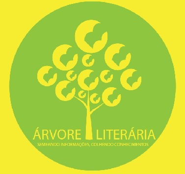

Segue abaixo alguns dos trabalhos efetuados pelo
aluno Lucas Rocha, no curso de Produção Multimídia.

Trata-se de uma plataforma voltada ao leitor na qual
pode-se visualisar as qualificações dos gêneros referente
aos livros.
Segundo semestre "BUD"
Trata-se de uma aplicativo voltado a deficientes físicos
com informações de locais adaptados ao cadeirante.